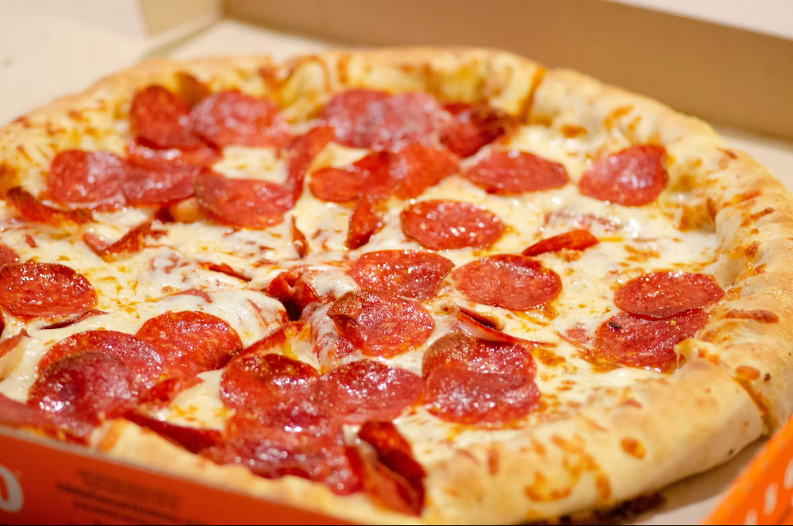

Pepperoni Pizza
A classic homemade pizza with a crisp, golden crust, rich tomato sauce,
melted mozzarella, and savory pepperoni slices.
Preparation Time
- Prep time: 20 minutes
- Resting time: 1 hour
- Cook time: 12–15 minutes
- Total time: About 1 hour 35 minutes
- Servings: 4
Ingredients
- 1 pizza dough ball
- 1/2 cup pizza sauce
- 2 cups shredded mozzarella cheese
- 30–40 pepperoni slices
- 1 tablespoon olive oil
- 1/2 teaspoon dried oregano
- 1/4 teaspoon garlic powder
- All-purpose flour, for dusting
Instructions
- Let the pizza dough rest at room temperature for about 1 hour.
- Preheat the oven to 245°C (475°F). Place a baking tray or pizza stone inside.
- Dust a work surface with flour and stretch the dough into a round shape.
- Spread the pizza sauce evenly over the dough, leaving a small border.
- Sprinkle the mozzarella cheese over the sauce.
- Arrange the pepperoni slices on top.
- Drizzle with olive oil and sprinkle with oregano and garlic powder.
- Bake for 12–15 minutes, until the crust is golden and the cheese is bubbling.
- Allow the pizza to cool for a few minutes, then slice and serve.
Nutrition
- Calories: Approximately 420 kcal per serving
- Protein: 20 g
- Carbohydrates: 45 g
- Fat: 19 g
- Saturated fat: 8 g
- Sodium: 950 mg
- Fiber: 2 g